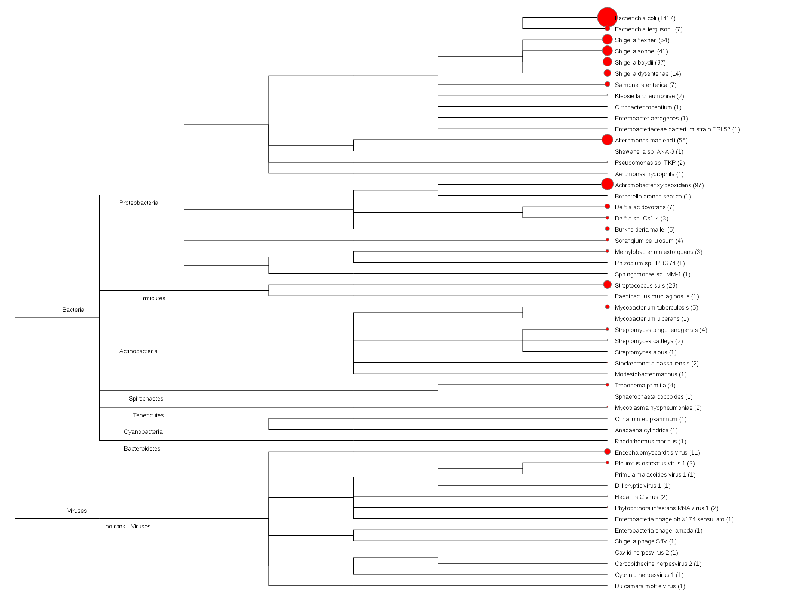
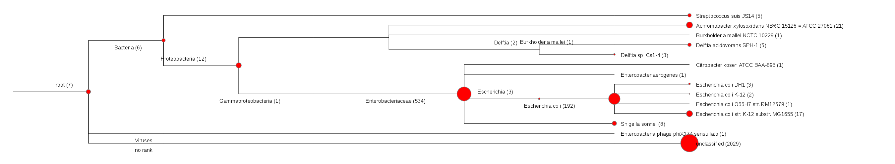

Summary
Project Name: Ecoli_10x
Description: -
Submission Time: 2014 Oct 22 17:56:49
Number of CPUs: 8
Total Running Time: 02h 05m 39s
General
| Analysis | Run | Status | Running Time |
|---|---|---|---|
| Quality Trim and Filter | On | Complete | 00:02:46 |
| Host Removal | On | Complete | 00:05:58 |
| IDBA Assembly | On | Complete | 00:02:15 |
| Reads Mapping To Contigs | Auto | Complete | 00:00:46 |
| Reads Mapping To Reference | On | Complete | 00:04:20 |
| Reads Taxonomy Classification | On | Complete | 00:22:15 |
| bwa | On | Complete | 00:04:13 |
| gottcha-speDB-b | On | Complete | 00:02:10 |
| gottcha-strDB-v | On | Complete | 00:00:23 |
| gottcha-genDB-v | On | Complete | 00:00:20 |
| kraken_mini | On | Complete | 00:00:32 |
| gottcha-speDB-v | On | Complete | 00:00:20 |
| gottcha-strDB-b | On | Complete | 00:02:08 |
| gottcha-genDB-b | On | Complete | 00:01:55 |
| metaphyler-srv | On | Complete | 00:00:45 |
| metaphlan | On | Complete | 00:00:09 |
| Contigs Mapping To Reference | Auto | Complete | 00:00:36 |
| Variant Analysis | Auto | Complete | 00:01:11 |
| Contigs Annotation | On | Complete | 00:03:25 |
| ProPhage Detection | On | Complete | 00:01:53 |
| SNP Phylogeny | On | Complete | 01:06:13 |
| Primer Validation | On | Complete | 00:00:08 |
| Primer Adjudication | On | Complete | 00:10:06 |
| Generate JBrowse Tracks | On | Complete | 00:01:44 |
| HTML Report | On | Complete | - |
| Report/Info | Location |
|---|---|
| Input Reads | /opt/apps/edge/edge_ui/EDGE_input/testData/Ecoli_10x.1.fastq, /opt/apps/edge/edge_ui/EDGE_input/testData/Ecoli_10x.2.fastq |
| Output Directory | Ecoli_10x |
| PDF Report | final_report.pdf |
| Process log | process.log |
| Error log | error.log |
Quality Trim and Filter
- Before Trimming
Before Stats Reads 331,126 Total Bases 50,000,026 bp Mean Read Length 151.00 bp - After Trimming
After Stats Reads 331,026 (99.97 %) Total Bases 49,984,926 (99.97 %) bp Mean Read Length 151.00 bp Paired Reads 330,930 (99.97 %) Paired Total Bases 49,970,430 (99.97 %) Unpaired Reads 96 (0.03 %) Unpaired Total Bases 14,496 (0.03 %)
Link to | QC Report PDF | Directory
Host Removal
Host file: /opt/apps/edge/edge_ui/EDGE_input/Host/Human_ref_GRCh38_all/human_ref_GRCh38_all.fa,/opt/apps/edge/edge_ui/EDGE_input/Host/Inverterbrate_Vectors_of_Human_Pathogens/all_vector.fa.
| After Removal | Stats |
|---|---|
| Total reads | 331,026 |
| Total non-host reads | 288,505 (87.15 %) |
| "human_ref_GRCh38_all" reads | 34 (0.01 %) |
| "all_vector" reads | 42,487 (12.83 %) |
Link to | Report PDF | Directory
De Novo Assembly
- General
Assembly Stats Number of contigs 1,367 N50 6,128 bp Max contig size 36,181 bp Min contig size 267 bp total assembly size 4,228,447 bp Link to | Report PDF | Contigs Fasta | JBrowse | Directory
- Assembly validation by read mapping
Mapped Stats Number of Mapped Reads 279,127 % of Total Reads 96.75 % Number of Unmapped Reads 9,378 % of Total Reads 3.25 % Average Fold Coverage 7.77 X Link to | Mapping Plot | JBrowse | Directory
- Annotation
Annotation Stats CDS 4,031 rRNA 4 tRNA 49 Show annotation result using JBrowse in [fullwindow] or [inline]

Reference-based Analysis
Reference file: /opt/apps/edge/edge_ui/EDGE_input/Reference/Escherichia_coli_str._K-12_substr._MG1655/NC_000913.gbk
- Contigs mapped to reference
Analysis Stats Number of Mapped Contigs 1,367 % of Total Contigs 100.00 % Average Fold Coverage 0.96 X Linear Coverage 92.2247% SNPs 251 InDels 17 Reference Name Length GC(%) Avg Fold(X) Base Coverage(%) NC_000913 Escherichia coli str_ K-12 substr_ MG1655 chromosome, complete genome 4,639,675 50.79 0.96 92.22 Show contigs mapping to the reference using JBrowse in [fullwindow] or [inline]
- Reads mapped to reference
- Mapped Reads
Analysis Stats Number of Mapped Reads 285,649 % of Total Post-QC Reads 99.01 % Reference Name Ref len Ref GC% Mapped reads Ref recovery% Avg fold(x) Fold std # of Gap Total Gap bases # of SNPs # of INDELs NC_000913 Escherichia coli str_ K-12 substr_ MG1655 chromosome, complete genome 4,639,675 50.79 285,649 94.46% 7.32 4.60 2,494 256,943 63 0 Show reads mapping to the reference using JBrowse in [fullwindow] or [inline]
- Unmapped Reads
Unmapped Stats Number of Unmapped Reads 2,856 % of total reads 0.99 % Radar map at species level [fullwindow]Link to | Summary table | Abundance | Directory
- Mapped Reads
Community Profiling
Profiling results of unmapped reads to the reference.
- General
Tool Rank Top1 Top2 Top3 Top4 Top5 bwa species Escherichia coli Achromobacter xylosoxidans Alteromonas macleodii Shigella flexneri Shigella sonnei gottcha-speDB-b species Escherichia coli N/A N/A N/A N/A gottcha-speDB-v species N/A N/A N/A N/A N/A metaphlan species N/A N/A N/A N/A N/A metaphyler-srv species N/A N/A N/A N/A N/A kraken_mini species Escherichia coli Achromobacter xylosoxidans Shigella sonnei Delftia acidovorans Streptococcus suis Heatmap (species) [full]Radar map at species level [fullwindow]Link to | Summary table | Abundance | Directory
- BWA (reads mapping)Tree plot at species level [fullwindow] Krona plot at species level [fullwindow]
- GOTTCHA (bacterial database)Tree plot at species level [fullwindow]
 Krona plot at species level [fullwindow]
Krona plot at species level [fullwindow] - GOTTCHA (viral database)[Not available]
- Metaphlan
[Not available]- Metaphyler-Srv
[Not available]- Kraken (mini database)
Tree plot at species level [fullwindow] Krona plot at species level [fullwindow]SNP Phylogeny
Selected database: Ecoli
Tree (ALL) [phyloXML] [circular] [rectangular] [full]Tree (CDS) [phyloXML] [circular] [rectangular] [full]Link to | SNP | Alignment (all) | Alignment (cds) | Directory
PCR Assay Analysis
- Primer Validation
Validate primers binding to contigs - SUCCESS!
Validate primers binding to reference - SUCCESS!
Contig Location Product Size Ecoli_10x_221 4336..4958 623 NC_000913 3957949..3958571 623 Link to | JBrowse | Report PDF | Directory
- Primer Design
Primer Name Location Forward Primer Forward Tm Reverse Primer Reverse Tm Size Background Ecoli_10x_186-1 2519..2855 TGCACGACGCCGAACTAC 60.4 C GTGCCGGGTAAGTGCACC 61.1 C 337 bp [44.33 C] Escherichia coli str. K-12 substr. W3110 Ecoli_10x_213-1 5157..5359 CTGGTGGCGTTCAACAATGA 59.0 C TTACGGAAGCCCTCCATCAG 59.2 C 203 bp [50.58 C] Escherichia coli UM146 chromosome Ecoli_10x_400-1 3100..3319 GCGCAACAGCTGAATATCGA 59.1 C TCAGGTTATGCCGTTTCGTG 58.6 C 220 bp [42.38 C] Escherichia coli ETEC H10407 Ecoli_10x_444-1 2730..2941 TCGCAATTTGTTGAATTTGCAGA 58.6 C TGTCGCCCTTTGTTGAGAAC 58.7 C 212 bp [46.19 C] Escherichia coli W chromosome Ecoli_10x_559-1 1946..2146 TACCGGCTGGCTGGCAAA 62.0 C TTGGCTGGCGGGGAGTTATT 61.9 C 201 bp [52.90 C] Escherichia coli PMV-1 main chromosome
Show primer validation/design result using JBrowse in [fullwindow] or [inline]


- Metaphlan

![[full]](images/QC_quality_report.png){kind=link}
![[full]](images/QC_read_length.png){kind=link}
![[full]](images/QC_nucleotide_content.png){kind=link}
![[full]](images/QC_GC_content.png){kind=link}
![[full]](images/HostRemovalStats.png){kind=link}
![[full]](images/Assembly_GC_content.png){kind=link}
![[full]](images/readsMappingToRef_coverage.png){kind=link}
![[full]](images/readsMappingToRef_fold_histogram.png){kind=link}
![[full]](images/heatmap_DATASET-UnmappedReads.species.png){kind=link}
![[fullwindow]](report/1_UnmappedReads/bwa/UnmappedReads-bwa.tree.svg){kind=link}
![[fullwindow]](report/1_UnmappedReads/gottcha-speDB-b/UnmappedReads-gottcha-speDB-b.tree.svg){kind=link}
![[fullwindow]](report/1_UnmappedReads/kraken_mini/UnmappedReads-kraken_mini.tree.svg){kind=link}
![[full]](images/pcrValidation.png){kind=link}